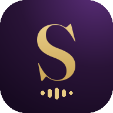

سياسة الخصوصية
SpeakUp · speakup-ar.com · آخر تحديث: 29 أكتوبر 2026
من إحنا
SpeakUp تطبيق وموقع لتعلّم اللغات (الإنجليزي، التركي، الإسباني، الألماني، الفرنسي، الإيطالي، والصيني) للناطقين بالعربي، مع معلم ذكي اسمه «توكي».
شو البيانات اللي بنجمعها
- بيانات الحساب: الاسم والإيميل، وكلمة السر محفوظة مشفّرة وما حدا بيقدر يشوفها.
- تقدّمك بالتعلّم: الدروس والكلمات اللي خلّصتها، والنقاط، والمستوى، ونتائج الاختبارات، عشان نحفظلك تقدّمك على كل أجهزتك.
- المحادثات مع توكي: الرسائل اللي بتكتبها أو بتحكيها لتوكي بتنبعت لمزوّد الذكاء الاصطناعي (Google Gemini) عشان يرد عليك ويصحّحلك.
- الصوت والميكروفون: بنستخدم الميكروفون بس لما تضغط زر التسجيل أو تبلّش مكالمة مع توكي، عشان نسمع نطقك ونصحّحه. ما بنحفظ تسجيلات صوتك.
- بيانات تقنية بسيطة: نوع الجهاز واللغة اللي اخترتها، عشان نحسّن التطبيق.
كيف بنستخدمها
بس لتشغيل التطبيق: حفظ تقدّمك، وردود المعلم الذكي، وتذكيرات التعلّم إذا فعّلتها. ما بنبيع بياناتك، وما بنشاركها لأي غرض إعلاني.
البيانات مخزّنة عند مزوّد خدمة سحابية آمن (Supabase)، والاتصال كله مشفّر (HTTPS).
الأطفال
التطبيق موجّه لعمر 13 سنة وفوق. إذا عرفنا إنه في حساب لطفل أصغر من 13 سنة، منحذفه.
حذف الحساب والبيانات
بتقدر تطلب حذف حسابك وكل بياناتك بأي وقت:
- ابعتلنا رسالة على واتساب +972567385853 مكتوب فيها «احذف حسابي» والإيميل اللي مسجّل فيه.
- بنحذف الحساب وكل البيانات المرتبطة فيه (التقدّم، والمحادثات، والرصيد) خلال 7 أيام، وبنبعتلك تأكيد.
- ممكن نحتفظ بسجلات الدفع القديمة لو في، للمدة اللي بيطلبها القانون بس.
تواصل معنا
لأي سؤال عن الخصوصية: واتساب +972567385853